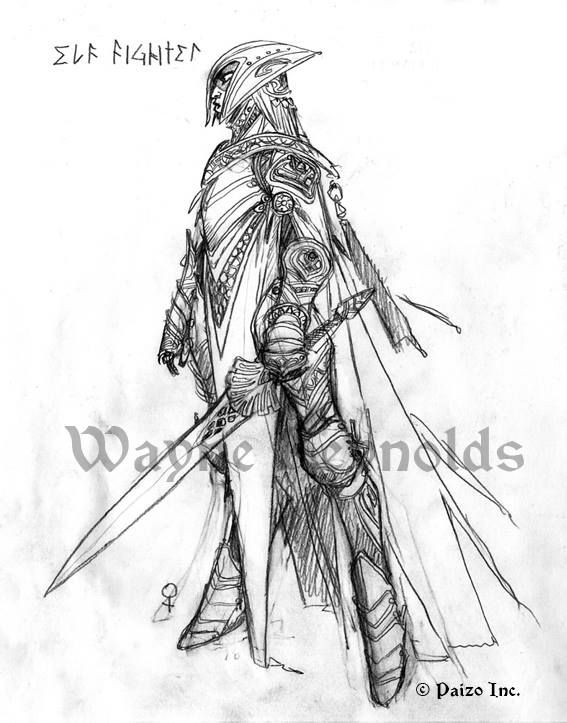

Elfos, conocidos por sus fuertes lazos con la naturaleza, magia y animales, los elfos son criaturas pacíficas, normalmente especializadas en magia, ellos viven en treehaum, una isla con un grán arbol en el centro, viven a su alrededor, lo cuidan y protejen, y a cambio, el arbol nutre sus tierras y los alrededores.
Su mejor caracteróistica, o debería decir, su más conocida, son sus orejas puntiagudas, ojos claros, y generalmente cabellos largos, bién, normalmente los elfos se especializan en mágia, a su véz, teniendo la estadística única de "natura". Aun así, puedes ver de vez en cuando elfos caracterizados por fuerza física, con su estadística única de "escama élfica".
Por lo general, los elfos son omnívoros, sin embargo, siguen una dieta estricta de plantas, aunque en casos de guerra, generalmente por proteger algo o a alguien, se les vé comer carne. Los elfos, son seres muy serenos, comprensibles y amigables, pero muy muy estrictos a la hora de hábitos y religiones. Se dice que esconden artefactos peligrosos y poderosos, para que no caigan en malas manos, pero de vez encuando aparece un elfo oscuro y... bueno, se comprueban los rumores. Ah, y que no se me olvide, son los guardianes protectores de las hadas y su bosque.
Por otro lado, las hadas, que son espíritus con forma de mujer, que viven en el bosque sagrado, no necesitan nutrirse, además de tener una estadística clave contra elfos oscuros, "hada", el único problema, es que las hadas son totalmente pacíficas, eso es debido a que en el bosque, nunca hay monstruos.